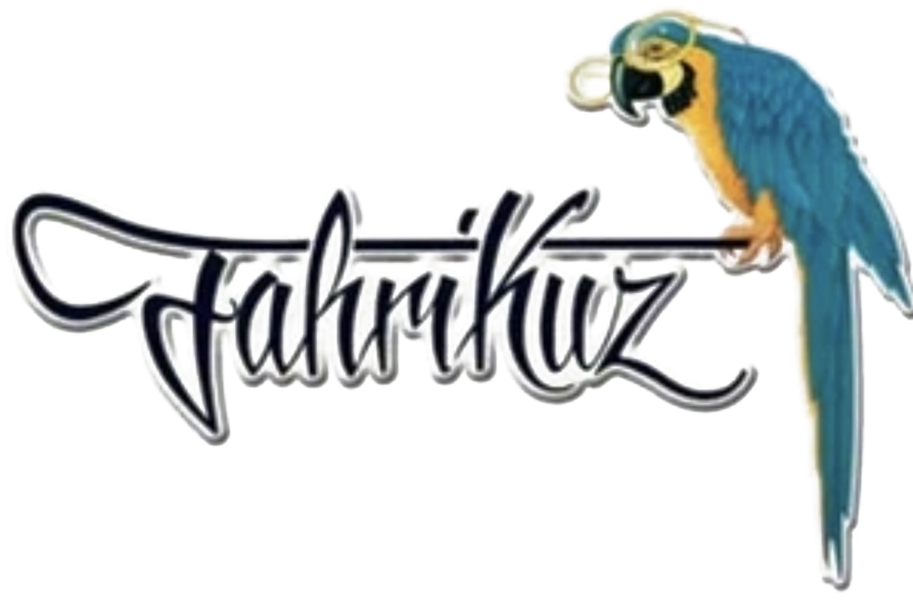

Yarım Asır
Devir
BÖLÜM 7
Hikâye devam ediyor.
0
Fahri Kuz Optik
0
Yabancı zincir
“Rakip olacağıma ortak oldum.”
Fahri Kuz · Takvim, 2009 · Savaş Ay söyleşisi

— Rahat durabilir mi o Bozkırlı çocuk?
— Durmaz. Durmadı da zaten.
Takvim, 2009 · Savaş Ay söyleşisi
Devir.
YARIM ASIR · BÖLÜM 7
Basında, ertesi gün
“Güle güle gözlüklü papağan.”
İki binli yıllarda kapıyı bir dünya devi çaldı:
dört binden fazla mağazası olan yabancı bir optik zinciri.
Türkiye'ye gelmek istiyordu.
Fahri Kuz'un cevabı netti.
Türkiye'de o güne kadar eşi benzeri
görülmemiş büyüklükte bir yabancı ortaklık doğdu.
İki yıl sonra, en başta söz verdiği
gibi, şirketi tamamen onlara bıraktı.
Ertesi gün gazeteler şöyle yazdı: